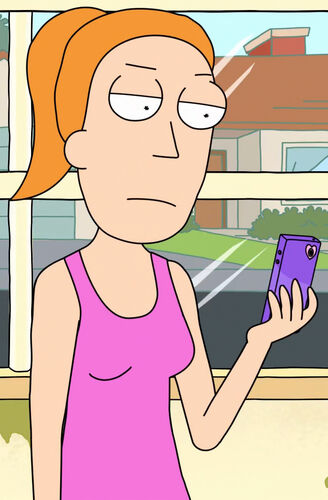

Summer Smith

Summer Smith é o deuteragonista de Rick e Morty, como membro da Família Smith. Ela é filha de Jerry Smith
e Beth Smith / Space Beth, a irmã mais velha de Morty Smith, e mãe de Naruto Smith .
Ela atualmente atua como a irmã mais velha e a neta do Morty e Rick, respectivamente, da Dimensão Cronenberged
e da Dimensão C-137. Ela é o único outro membro conhecido da Família Smith a estar ciente desse fato. Conforme
a série progrediu, Summer se envolveu com mais frequência nas aventuras de Rick e Morty. Ela e Morty muitas vezes
brigam pelo afeto de Rick, mas também mantêm um vínculo único decorrente da revelação de que Morty não é seu irmão
original.
Ela é dublada por Mariana Pozatto.
Aparência
Summer é uma adolescente de estatura média, constituição magra e quadris largos. Ela tem uma cor de pele clara e cabelos ruivos na altura dos ombros,
ela tem uma cabeça oval e um nariz pontudo. Sua roupa mais comum tem sido uma regata rosa brilhante, calça capri branca e sapatos pretos. Ela geralmente
tem o cabelo puxado para trás em um rabo de cavalo. Notavelmente, ela compartilha exatamente o mesmo formato de cabeça de seu pai, Jerry.
Personalidade
Summer tem alguns traços de personalidade de uma típica adolescente americana, pois deseja ser popular entre seus colegas e acha que as palhaçadas de
sua família são disfuncionais, embora ela ainda se importe com elas. Ela é muito apegada ao telefone e às mídias sociais, gravando vídeos de seu cachorro
Snuffles quando ele se tornou superinteligente e estremecendo ao pensar em seu pai Jerry entrando no Facebook.
É revelado que Summer pode ter ciúmes do relacionamento próximo entre seu avô Rick e seu irmão Morty, e às vezes ela pode
se sentir ignorada por seu avô. Enquanto Rick tenta mantê-la à distância, os dois partem em suas próprias aventuras, inclusive
no planeta Gazorpazorp. Seu complexo de ser ignorado por Rick mostra uma conexão com o Diabo em "Something Ricked
This Way Comes".
Embora Summer não tenha uma mente tão científica quanto seu avô Rick, ela possui inteligência. Summer se mostra uma
adolescente muito inteligente e perspicaz, pelo menos em comparação com o resto de sua família. Atualmente, ela não é
tão violenta quanto Beth quando era jovem, mas gosta de lutar ao lado de Rick e reage rapidamente a situações de vida
ou morte.
Ela também é uma pessoa sociopata e narcisista, como seu avô; semelhante à maneira como Morty responde, mas apenas quando realmente levado ao
seu limite. Summer, no entanto, parece mais capaz de acessar esses elementos de sua personalidade mais profundamente enraizada quando submetida à
influência de seu avô Rick por um período de tempo relativamente curto, como visto em "Rickmancing the Stone".
Ela também é mostrada para possuir um forte desejo de família. Sua posição em relação a eles é melhor resumida em sua citação de "The Wedding
Squanchers", onde ela explica que prefere viver uma existência isolada sem futuro se isso significar que a família não terá que abandonar Rick,
dizendo que acredita que, "você não ama alguém na esperança de uma recompensa". Em "The Rickchurian Mortydate", ela é mostrada para reiterar
esse sentimento quando ela foge livremente com a família para uma cabana na floresta para que Beth nunca tenha que experimentar sua crise
existencial sozinha.